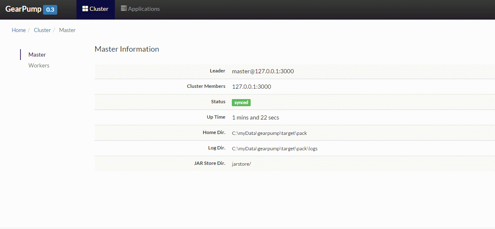

Admin Guide
Pre-requisite
Gearpump cluster can be installed on Windows OS and Linux. Before installation, you need to decide how many machines are used to run this cluster. For each machine, the requirements are listed in table below.
Table: Environment requirement on single machine
| Resource | Requirements |
|---|---|
| Memory | 2GB free memory is required to run the cluster |
| Java | JRE 6 or above |
| User permission | Root permission is not required |
| Network Ethernet | (TCP/IP) |
| CPU | Nothing special |
| HDFS installation | Default is not required. You only need to install it when you want to store the application jars in HDFS. |
| Kafka installation | Default is not required. You need to install Kafka when you want the at-least once message delivery feature. Currently, the only supported data source for this feature is Kafka |
Table: The default port used in Gearpump:
| usage | Port | Description |
|---|---|---|
| Dashboard UI | 8090 | Web UI. |
| Dashboard web socket service | 8091 | UI backend web socket service for long connection. |
| Master port | 3000 | Every other role like worker, appmaster, executor, user use this port to communicate with Master. |
How to Install
The installation package can be downloaded from Download Address. You are suggested to unzip the package to same directory path on every machine you planned to install Gearpump. To install Gearpump, you at least need to change the configuration in conf/gear.conf.
| Config | Default value | Description |
|---|---|---|
| base.akka.remote.netty.tcp.hostname | 127.0.0.1 | Host or IP address of current machine. The ip/host need to be reachable from other machines in the cluster. |
| Gearpump.cluster.masters | ["127.0.0.1:3000"] | List of all master nodes, with each item represents host and port of one master. |
| gearpump.worker.slots | 100 | how many slots this worker has |
Besides this, there are other optional configurations related with logs, metrics, transports, ui. You can refer to Configuration Guide for more details.
Start the Cluster Daemons
Gearpump can be started in single JVM, single machine, or a cluster of machines.
Local Mode
In local mode, master node and worker node will be started in single JVM.
For example:
bin/local -ip host -port 3000
NOTE: on Linux, you can use "nohup command &" to start command as background process.
NOTE: on windows: use local.bat instead.
Distributed Mode
In distributed mode, you can start master and worker in different JVM.
To start master:
bin/master -ip xx -port xx
The ip and port will be checked against setting under conf/gear.conf, so you need to make sure they are consistent with settings in gear.conf.
NOTE: for high availability, please check Master HA Guide
To start worker:
bin/worker -master ip:port
Start UI
bin/services -master 127.0.0.1:3000
After UI is started, you can brower http://127.0.0.1:8090 to view the cluster status.

NOTE: The UI port can be configured in gear.conf. Check Configuration Guide for information.
Submit an new Application
You can use command bin/gear app to submit To check the syntax:
bin/gear app -jar xx.jar MainClass <arg1> <arg2> ...
Manage the applications
After the application is started, you can view the status of application in UI. In the UI, you can allowed to shutdown the application.

NOTE: Besides UI, there is also command line tools to manage the application, please check Command line tools for information.
Security
Every application have a submitter user. We will separate the application from different user, like different log folder for different applications. However, for now there is no authentication or authorization in place to protect against unauthorized access.